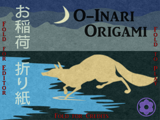
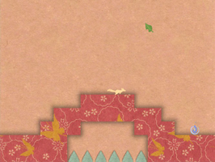
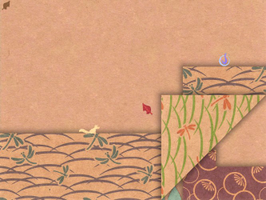

O-Inari Origami
Dieser Artikel wurde für die folgenden Ubuntu-Versionen getestet:
Ubuntu 14.04 Trusty Tahr
Zum Verständnis dieses Artikels sind folgende Seiten hilfreich:
O-Inari Origami  ist ein plattformübergreifendes Spiel für Linux, Windows und Mac OS X. Nicht umsonst enthält der Name das Wort Origami – es handelt von einem kleinen Papier-Fuchs in einer Welt aus Papier. Durch geschicktes Falten hilft man ihm, sich von Level zu Level zu bewegen.
ist ein plattformübergreifendes Spiel für Linux, Windows und Mac OS X. Nicht umsonst enthält der Name das Wort Origami – es handelt von einem kleinen Papier-Fuchs in einer Welt aus Papier. Durch geschicktes Falten hilft man ihm, sich von Level zu Level zu bewegen.
Voraussetzungen¶
Das Spiel basiert auf Java. Wie man eine Laufzeitumgebung (JRE) installiert, ist im Artikel Java/Installation beschrieben. Mit OpenJDK 7 wurde es erfolgreich getestet (siehe auch Problembehebung).
|  |
| Spielstart |
|  |
| Level 1 |
|  |
| Level 3 |
Installation¶
O-Inari Origami ist nicht in den offiziellen Paketquellen enthalten. Es kann über die Ludum Dare-Seite  heruntergeladen und in einen beliebigen Ordner, z.B. ~/Spiele/, entpackt [2] werden.
heruntergeladen und in einen beliebigen Ordner, z.B. ~/Spiele/, entpackt [2] werden.
Hinweis!
Fremdsoftware kann das System gefährden.
Nachdem man die Datei start.sh ausführbar gemacht hat [3], wird das Programm aus dem Ordner, in den es entpackt wurde, mit dem folgenden Befehl [4] gestartet:
./start.sh
Bei Bedarf kann man sich einen Programmstarter [5] anlegen. Als Symbol lässt sich das obige Logo nutzen. Beispiel:
[Desktop Entry] Name=O-Inari Origami Comment=About a paper fox in a paper world Comment[de]=Über einen Papier-Fuchs in einer Welt aus Papier Exec=/PFAD/ZUM/ORDNER/start.sh Icon=/home/BENUTZERNAME/Bilder/o-inari-origami_logo.png Terminal=false Type=Application Categories=Game; StartupNotify=false
Bedienung¶
Tastenkürzel¶
| Tastenkürzel | |
| Taste(n) | Beschreibung |
 oder oder  | Fuchs bewegen |
| oder ↑ | Springen |
 | Falten |
 | Falten rückgängig machen |
| R | Level nochmal spielen |
| Esc | Hauptmenü |
Level-Editor¶
Über den Startbildschirm erreicht man am linken Rand den integrierten Level-Editor. Einige Kreationen von Benutzern sind im Abschnitt Links weiter unten zu finden.
| Tastenkürzel | |
| Taste(n) | Beschreibung |
| | Kachel setzen |
| | Kachel entfernen |
| Q | Kacheltyp definieren |
| P | Einstiegspunkt der Spielfigur festlegen |
| ⇧ | In umgekehrter Richtung bearbeiten |
| Alt | Unterseite bearbeiten |
| 1 bis 9 | Level festlegen |
| Tab ⇆ | Level testen |
| S / L | Level speichern/laden |
| ⇧ + S | Level (als Text) in die Zwischenablage kopieren |
| ⇧ + L | Level (als Text) aus der Zwischenablage laden |
Problembehebung¶
Das Programmfenster zeigt bei der Verwendung sehr alter Grafikkarten nur einen weißen Hintergrund, während die Tonausgabe anstandslos funktioniert.
Infobox¶
| O-Inari Origami | |
| Genre: | Puzzle / Jump'n'Run |
| Sprache: |  |
| Veröffentlichung: | 2014 |
| Entwickler: | Marius (MagmaMcFry): Programmierung, Spielmechanik, Puzzle Design Elysée (Vector): Konzept, Visual Design, Puzzle Design Dale (Solifuge): Grafik Design, Audio, Puzzle Design Jacob (Eerr): Puzzle Design, Tests, Dokumentation |
| Systemvoraussetzungen: | Java |
| Medien: | Download |
| Strichcode / EAN / GTIN: | - |
| Läuft mit: | nativ |
 Übersichtsartikel
Übersichtsartikel- Erstellt mit Inyoka
-
 2004 – 2017 ubuntuusers.de • Einige Rechte vorbehalten
2004 – 2017 ubuntuusers.de • Einige Rechte vorbehalten
Lizenz • Kontakt • Datenschutz • Impressum • Serverstatus -
Serverhousing gespendet von